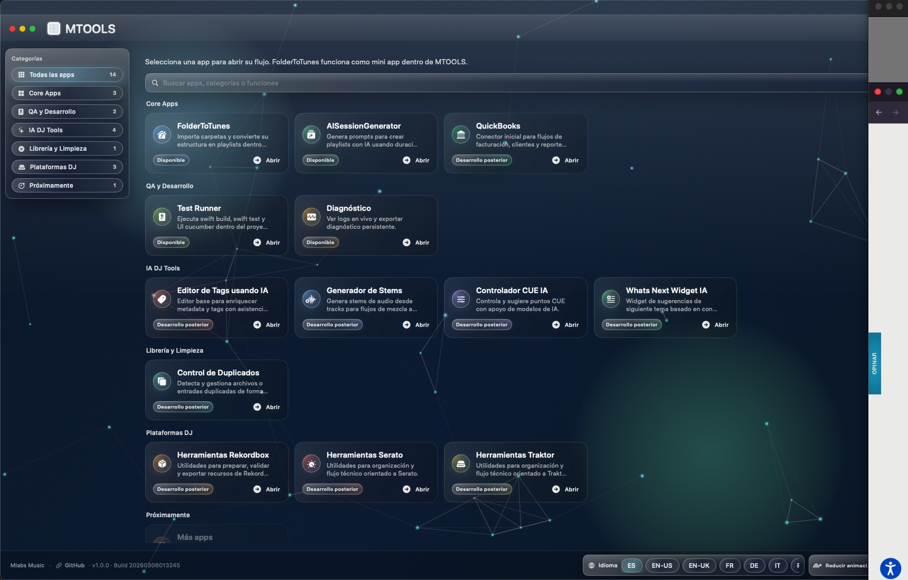
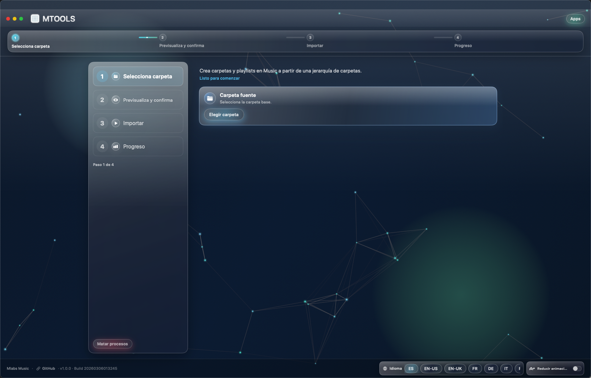
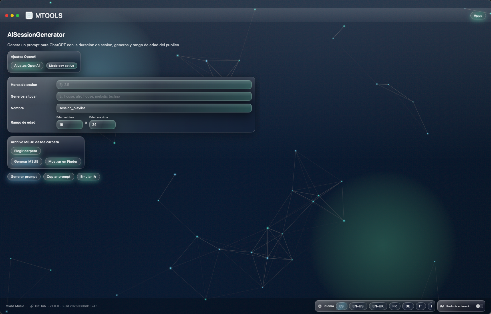
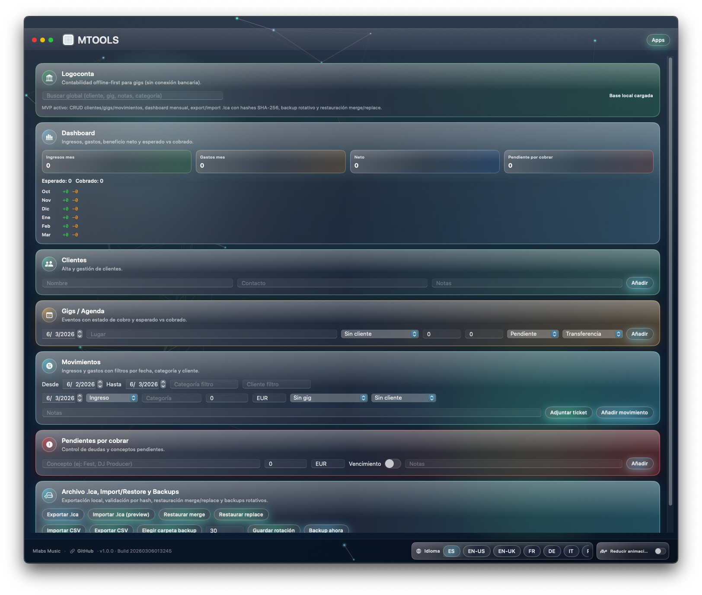
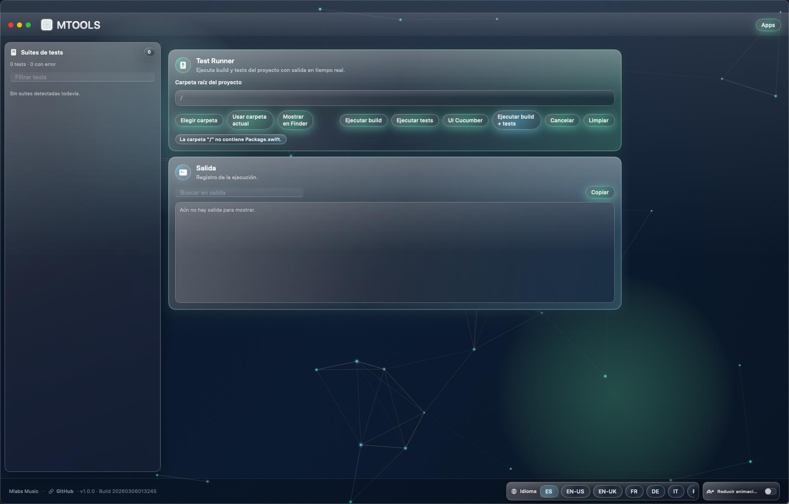
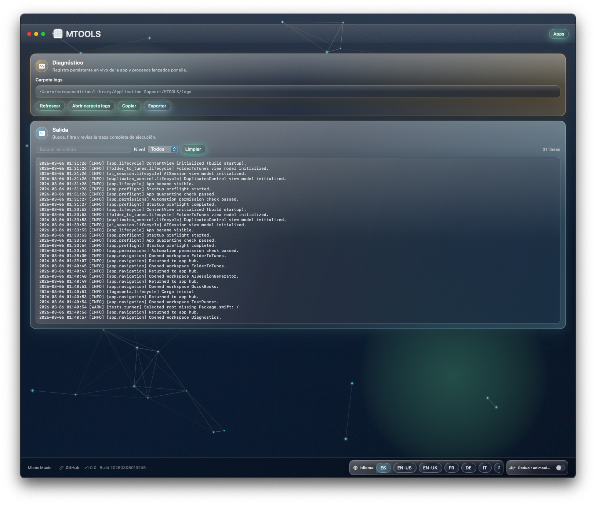

FolderToTunes
Convierte estructuras de carpetas en playlists dentro de Apple Music con validacion previa.
Mlabs Music
Projects
Vista informativa del portfolio actual: modulos en produccion, beta y roadmap. Capturas reales de beta para revisar UX, profundidad funcional y direccion del producto.
Capturas reales del estado beta de MTOOLS.






Resumen de micro apps priorizadas en MTOOLS.
Convierte estructuras de carpetas en playlists dentro de Apple Music con validacion previa.
Genera prompts de sesion DJ con IA y prepara ejecucion desde archivos locales.
Modulo de contabilidad local con backup/restauracion y control de integridad.
Deteccion de duplicados por fingerprint para limpieza segura de librerias de audio.
Acceso por reserva de demo y validacion de caso de uso con el equipo Mlabs Music.
Solicita tu demo oficial en:
info@mlabsmusic.com